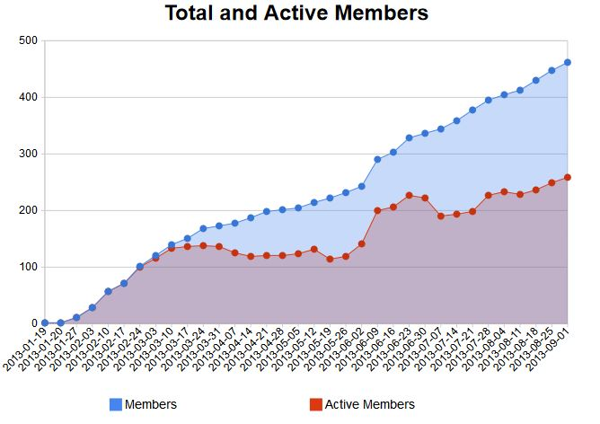

Getting Speakers, Finding Sponsors, Planning Events
A Day in the life of a JUG
Created by Freddy Guime
And Bob Paulin / @bobpaulin / bob@bobpaulin.com
About Us
Freddy Guime
- Chicago Java Users Group (CJUG) Board
- Day Job - Director of Client Technlogy @ OptionsCity
- Community Leader (CJUG)
- Famous Author ;)
About Us
Bob Paulin
- Chicago Java Users Group Board
- Independant Consultant
- Speaker Scheduler (CJUG)
Recent CJUG Accomplishments

Stats on national speakers we've had
How did we do this?
Outline of our talk. Members, Sponsors, and Event planning
Members Placeholder
Getting Sponsors
AKA living on other people's money
Identifying Potential Sponsors
- Employers
- Staffing Agencies
- New Companies in Town
- Universities
Understanding Sponsors
What do they want from your JUG?
What can you JUG offer?
Creating Win-Win Sponsorships
Event Planning Placeholder
Putting it all together.... A day in the life of our JUG
Freddy Guime
Placeholder for Freddy Contact info
Bob Paulin